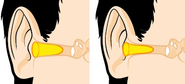
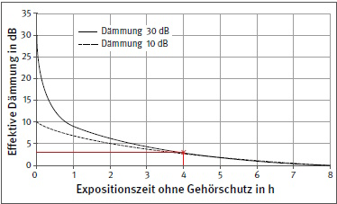
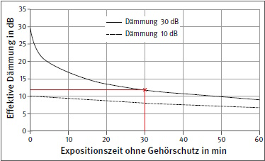

Die arbeitsmedizinische Vorsorge zum Thema Lärm ist vom Unternehmer bzw. der Unternehmerin entsprechend der Verordnung zur Arbeitsmedizinischen Vorsorge (ArbMedVV) zu veranlassen bzw. anzubieten. Zur praktischen Umsetzung kann die "DGUV Empfehlung Lärm" aus dem Vorsorgeteil der "DGUV Empfehlungen für arbeitsmedizinische Beratungen und Untersuchungen" herangezogen werden.
Arbeitsmedizinische Vorsorge beinhaltet immer ein ärztliches Beratungsgespräch (z. B. zum Gehörschutz) mit Anamnese einschließlich Arbeitsanamnese sowie körperliche oder klinische Untersuchungen (z. B. eine audiometrische Untersuchung), soweit diese für die individuelle Aufklärung und Beratung erforderlich sind und der oder die Beschäftigte diese Untersuchungen nicht ablehnt.
Bestandteile des ärztlichen Beratungsgespräches zum Thema Gehörschutz können sein:
Es gibt verschiedene Methoden zur Bestimmung der individuellen Schalldämmung (z. B. Nutzung von Screening-Audiometern), die in Abschnitt 7.12 beschrieben sind.
Auch wenn in Lärmbereichen die Pflicht zur Benutzung von Gehörschutz besteht, sind die Beschäftigten nicht immer bereit, diesen auch zu verwenden. Maßnahmen wie Abmahnungen sollten die letzte Möglichkeit sein. Der bessere Weg ist die Motivierung der Beschäftigten.
Zum einen kann die Akzeptanz gesteigert werden, wenn eine Gruppe von Beschäftigten mehrere Gehörschutzarten testet und dann eine Auswahl hinsichtlich Praxistauglichkeit und Tragekomfort trifft (siehe Abschnitt 6.12). Es gibt nicht einen Gehörschutz, der für alle Beschäftigten gleichermaßen geeignet ist. Gehörschutz sollte abgesehen von den Gegebenheiten am Arbeitsplatz (z. B. notwendige Schalldämmung) individuell ausgesucht werden können. Nach der Testphase sollten die Unternehmerinnen und Unternehmer den Beschäftigten verschiedene Gehörschutzarten zur Verfügung stellen. Einwegstöpsel sind in mehreren Größen anzubieten. Auch Otoplastiken zeigen oft eine motivierende Wirkung, da sie auf die Beschäftigten angepasst sind.
An Arbeitsplätzen mit monotoner Tätigkeit kann das Tragen eines Gehörschützers mit integriertem Radioempfang oder integrierter Musikwiedergabe die Motivation der Beschäftigten positiv beeinflussen (siehe Abschnitt 6.4.6).
Mindestens einmal pro Jahr wird eine Unterweisung mit praktischen Übungen zum Einsetzen/Verwenden von Gehörschutz durchgeführt. In diesem Rahmen können Hörbeispiele abgespielt werden, welche eine Schwerhörigkeit simulieren. Das wirkt bei den Teilnehmenden meist sehr nachdrücklich.
Wichtig ist, dass die Führungskräfte hinter den Maßnahmen zur Lärmminderung stehen. Sie verwenden auch bei kurzen Aufenthalten im Lärmbereich Gehörschutz und überprüfen regelmäßig, ob der Gehörschutz von den Beschäftigten genutzt wird. Wird bemerkt, dass Gehörschutz nicht oder nicht richtig benutzt wird, ist das umgehend anzusprechen und die Gründe dafür zu ermitteln.
Da bei Tages-Lärmexpositionspegeln oberhalb von 80 dB(A) eine Gehörgefährdung nicht vollständig ausgeschlossen werden kann, soll auf die Benutzung der bereitgestellten Gehörschützer ab diesem Lärmexpositionspegel hingewirkt werden.
Die Unternehmerinnen und Unternehmer haben den bestimmungsgemäßen Einsatz und das Trageverhalten zu überwachen. Gegebenenfalls ist eine fachkundige Person zu benennen, die sicherstellt, dass die Beschäftigten der Tragepflicht bestimmungsgemäß nachkommen.
Die Unternehmerinnen und Unternehmer haben dafür Sorge zu tragen, dass die Beschäftigten den persönlichen Gehörschutz bestimmungsgemäß verwenden, wenn
7.5.1 Allgemeines
Die Informationsbroschüren der Herstellfirma sind zu beachten. Sind Gehörschützer für das linke oder rechte Ohr unterschiedlich gestaltet, müssen sie seitenrichtig benutzt werden.
7.5.2 Kapselgehörschützer
Damit die Schutzwirkung der Gehörschützer erreicht wird, ist Folgendes zu beachten:
7.5.3 Gehörschutzstöpsel
Der äußere Gehörgang ist gekrümmt. Krümmung und Weite des Gehörganges sind individuell sehr unterschiedlich. Der Form des Gehörganges muss sich ein Gehörschutzstöpsel, ohne unangenehmen Druck auf die Haut auszuüben, anpassen können. Insbesondere ist bei der Verwendung von Gehörschutzstöpseln Folgendes zu beachten:

Abb. 11 Ausreichend tief im Gehörgang eingesetzte Gehörstöpsel in kleinem und großem Gehörgang
Gehörschützer müssen bei gehörgefährdenden Lärmpegeln während der gesamten Aufenthaltsdauer getragen werden, damit eine optimale Schutzwirkung erreicht wird. Auch wenn sie nur für kurze Zeit nicht getragen werden, wird die Schutzwirkung, wie Abbildung 12 und Abbildung 13 zeigen, drastisch verringert.

Abb. 12 Effektive Dämmung eines Gehörschützers mit 30 bzw. 10 dB Dämmung in Abhängigkeit von der Expositionszeit ohne Gehörschützer bezogen auf eine 8-Stunden-Schicht

Abb. 13 Effektive Dämmung eines Gehörschützers mit 30 bzw. 10 dB Dämmung in Abhängigkeit von der Expositionszeit ohne Gehörschützer bezogen auf eine 8-Stunden-Schicht (Ausschnitt: Zeitraum 60 min)
Wird der Gehörschützer nicht während der gesamten Dauer der Lärmbelastung getragen, wird die Schutzwirkung im Wesentlichen durch die Tragepausen und nicht durch die Schalldämmung des Gehörschützers bestimmt.
Anmerkungen und Beispiele (DIN EN 458):
Wird ein Gehörschützer während eines 8-Stunden-Tages nur vier Stunden getragen, beträgt seine effektive Schutzwirkung höchstens 3 dB (vgl. Abbildung 12).
Beispiel:
Es liegt eine gleichbleibende Geräuschbelastung mit einem LEX,8h von 105 dB(A) vor und es wird ein Gehörschützer mit einer Schalldämmung von 30 dB verwendet. Wird der Gehörschützer während der gesamten acht Stunden getragen, beträgt der für das Gehör wirksame Pegel L’EX,8h = 75 dB(A). Wird der Gehörschützer während eines 8-Stunden-Tages 30 Minuten lang nicht benutzt, beträgt der L’EX,8h = 93 dB(A) (vgl. Abbildung 13); somit ist trotz der Benutzung eines Gehörschützers das Risiko eines lärmbedingten Hörverlustes gegeben.
7.7.1 Sprache
Es ist eine normale Reaktion, den Stimmaufwand zu reduzieren, wenn Gehörschützer getragen werden. Es ist daher wichtig, dass die Benutzer und Benutzerinnen ihren Sprachschalldruckpegel beibehalten oder sogar erhöhen, um die Sprachkommunikation zu verbessern.
Auch wenn Gehörschützer mit dem Kennzeichen W zum Einsatz kommen, muss vor der Benutzung des Gehörschutzes durch Hörproben unter Betriebsbedingungen überprüft werden, dass die Kommunikation sicher möglich ist.
7.7.2 Informationshaltige Arbeitsgeräusche
Aufgrund der großen Bandbreite an wahrzunehmenden Geräuschen ist auf jeden Fall eine Hörprobe durchzuführen. Der durch den Gehörschutz veränderte Höreindruck kann eine Gewöhnung erfordern, bis die Maschinengeräusche etc. wieder sicher identifiziert und beurteilt werden können.
7.7.3 Signalerkennung
Es muss sichergestellt werden, dass akustische Gefahrensignale (Warnsignale, Notsignale und Notsignal für Räumung) in Lärmbereichen von den Benutzern und Benutzerinnen der Gehörschützer eindeutig wahrgenommen werden können.
Ist eine eindeutige Wahrnehmung nicht sichergestellt, ist sie durch Lärmminderung oder, falls dies nicht möglich ist, durch eine Änderung des Signals (z. B. Änderung des Signalspektrums, Erhöhung des Signalpegels, zusätzliche Verwendung optischer Signale) anzustreben (siehe TRLV Lärm, Teil 3, Abschnitt 4.8).
Vor der ersten Benutzung des Gehörschutzes sind Hörproben entsprechend Anhang C der DIN EN ISO 7731 "Ergonomie – Gefahrensignale für öffentliche Bereiche und Arbeitsstätten – Akustische Gefahrensignale" erforderlich.
Für die speziellen Arbeitsbereiche, bei denen eine erhöhte Gefährdung angenommen werden muss (siehe Abschnitt 6.5.3), sind Hörproben zwingend vorgeschrieben, so zum Beispiel Wahrnehmbarkeitsproben bei Gleisbauarbeiten (Kennzeichen S) täglich vor Beginn der Arbeitsschicht und darüber hinaus auch, falls sich die Arbeitssituation ändert. Nähere Informationen sind in der DGUV Vorschrift 77 bzw. 78 "Arbeiten im Bereich von Gleisen" sowie DGUV Regel 101-024 "Sicherungsmaßnahmen bei Arbeiten im Gleisbereich von Eisenbahnen" aufgeführt.
Signalhören muss auch für Personen, die Fahrzeuge im öffentlichen Straßenverkehr führen, sicher möglich sein. Falls erforderlich dürfen nur geeignete Gehörschützer (Kennzeichen V) verwendet werden (siehe DGUV Information 212-673 "Empfehlungen zur Benutzung von Gehörschützern durch Fahrzeugführer bei der Teilnahme am öffentlichen Straßenverkehr"). Auch hier ist eine individuelle Hörprobe erforderlich, die im Abstand von maximal drei Jahren am Arbeitsplatz unter bestimmten Bedingungen durchgeführt, bestanden und dokumentiert werden muss.
Für Personen, die Triebfahrzeuge führen (Kennzeichen E1, E2 und E3), stehen nach der Fachinformation der Verwaltungs-Berufsgenossenschaft (VBG) bzw. der Unfallversicherung Bund und Bahn (UVB, siehe Literaturliste im Anhang 10) zwei Methoden für die Hörprobe zur Auswahl: entweder mit zwei Triebfahrzeugen (ähnlich wie für Personen, die Fahrzeuge im öffentlichen Straßenverkehr führen) oder über die Wiedergabe von Signalen und Störgeräuschen über Lautsprecher in einem Büroraum. Die erfolgreich bestandene Hörprobe ist zwingend erforderlich und spätestens alle drei Jahre zu wiederholen. Zusätzlich ist täglich vor dem ersten Benutzen des Gehörschützers die Verständlichkeit eines Funkgesprächs zu prüfen.
7.7.4 Richtungshören
Bei Arbeiten im Bereich von Transporteinrichtungen, z. B. an Fahrzeugen, werden Kapselgehörschützer nicht selten wegen des gestörten Richtungshörens abgelehnt. Hier hilft meist ein Wechsel zu Gehörschutzstöpseln.
7.7.5 Kommunikation bei bestehender Hörminderung
Die Kommunikation in Lärmbereichen ist für Personen mit bestehender Hörminderung auch ohne Gehörschutz deutlich erschwert. Mit Gehörschutz wird dieser Effekt noch verstärkt. Das Sprachverstehen ist dabei stark abhängig vom Grad der Hörminderung, der zeitlichen Struktur des Störlärms (Auftreten von Pegelschwankungen bzw. leisen Geräuschphasen oder Impulsspitzen) und vom Frequenzspektrum des Störlärms. Beim Einsatz muss man sich bewusst sein, unter welchen Bedingungen der Gehörschutz konkret verwendet wird. Nur so besteht für die Betroffenen die Möglichkeit, in der jeweiligen Arbeitssituation mit einem ausgewählten Gehörschutz zu kommunizieren. Der individuellen Hörprobe kommt für diese Personengruppe eine besonders große Bedeutung zu.
Es ist aber nicht auszuschließen, dass für Personen mit Hörminderung in einer bestimmten Lärmsituation bereits bei Schalldruckpegeln unter 85 dB(A) die Kommunikation nicht möglich ist. Für solche Fälle ist die Gefährdungsbeurteilung anzupassen. Mögliche Maßnahmen sind: Erhöhung des Signalpegels, Nutzung zusätzlicher optischer Signalisierung, Nutzung von Funk, Telefon etc. und Gehörschützern mit elektronischer Zusatzfunktion, Einführung von Verhaltensregeln (z. B. Kommunikation über Handzeichen, Absprachen außerhalb von Lärmbereichen).
Hörgeräte sollen im Lärmbereich grundsätzlich nicht getragen werden. Um sich das Absetzen von Hörgeräten im Lärmbereich zu ersparen, wird gelegentlich Kapselgehörschutz über das Hörgerät gesetzt. Dies ist nicht zu empfehlen, da sich Feuchtigkeit im Hörgerät sammeln und die Elektronik schädigen kann.
Ohrpassstücke ausgeschalteter Hörgeräte sind kein Ersatz für Gehörschützer. Jedoch besteht im Einzelfall die Möglichkeit, ein ausgeschaltetes Hörgerät als Ersatz für einen Gehörschutzstöpsel zu verwenden. Dazu muss die Gehörschutz-Otoplastik in Kombination mit einem ausgeschalteten Hörgerät als Gehörschutz geprüft und zertifiziert sein, was die Mindestschalldämmung nach DIN EN 352-2 einschließt. Außerdem muss die Gehörschutz-Otoplastik für den Schalldruckpegel am Arbeitsplatz geeignet sein.
Hörgeräte können dann im Lärmbereich verwendet werden, wenn sie für diese Nutzung zugelassen sind. Näheres siehe Abschnitt 8.4.
Hörgeräte gelten in Deutschland als Medizinprodukt und werden nach dem Medizinproduktegesetz der Risikoklasse IIa zugeordnet.
7.9.1 Kombinationen unterschiedlicher Gehörschutzarten
Bei der Verwendung von Kombinationen aus Gehörschutzstöpseln mit Kapselgehörschutz sollen auch bei kurzzeitigem Einsatz nur geprüfte Kombinationen benutzt werden. Bei sachgerechter Benutzung kann so eine Schalldämmung im mittleren Frequenzbereich von bis zu ca. M = 40 dB erreicht werden.
Handelt es sich um den Einsatz in Lärmbereichen mit Schalldruckpegeln von LEX,8h ≥ 110 dB(A), ist vor dem Einsatz eine spezielle Unterweisung zur Benutzung dieser Kombinationen erforderlich (qualifizierte Benutzung). Wesentlich ist, dass nach Einsetzen der Gehörschutzstöpsel der Kapselgehörschützer so aufgesetzt wird, dass dabei die Stöpsel in ihrer Sitzposition nicht verändert werden. Dies ist für die gesamte Dauer der nachfolgenden Benutzung sicherzustellen (z. B. beim kurzzeitigen Absetzen der Kapselgehörschützer).
Die mögliche Änderung der Sitzposition der Stöpsel im Gehörgang und/oder eine Körperschallübertragung durch Berühren beider Gehörschützer kann eine Verringerung der Schutzwirkung zur Folge haben.
7.9.2 Kombination von Gehörschutz mit Kopfschutz
Bei der Notwendigkeit der Benutzung von Kombinationen aus Gehörschutz und Kopfschutz wird häufig am Industrieschutzhelm befestigter Kapselgehörschutz verwendet. Nach Anpassung des Helms an die Kopfgröße müssen die Kapseln zuerst in die richtige Position am Kopf gebracht werden. In einem zweiten Schritt müssen sie in die Gebrauchsposition angedrückt werden, damit die Standardschutzwirkung erreicht wird. In vielen Fällen kann der Benutzer bzw. die Benutzerin dies an einem Einrastgeräusch erkennen.
Auch die Verwendung von Gehörschutzstöpseln ist möglich. Die Stöpsel (insbesondere der Griff bei fertig geformten Gehörschutzstöpseln bzw. der Bügel bei Bügelstöpseln, benutzt als Nackenbügel), dürfen nicht mit dem Kopfschutz in Berührung kommen, um eine Lageveränderung der Stöpsel und/oder eine Körperschallübertragung und somit eine Verringerung der Schutzwirkung zu vermeiden.
Beim Einsatz von Kapselgehörschützern ist darauf zu achten, dass weder die Kapseln noch der Bügel durch die Kopfbedeckung beeinträchtigt werden. Dabei ist sicherzustellen, dass der Dichtsitz der Dichtungskissen gewährleistet ist.
7.9.3 Kombination von Gehörschutz mit Atemschutz
Werden Gehörschutzkapseln gleichzeitig mit Atemschutzgeräten benutzt, ist darauf zu achten, dass keine Leckagen der Dichtkissen, z. B. am Maskenrand oder der Kopfbänderung auftreten und die Dichtlinie des Atemanschlusses sowie dessen Sitz nicht durch die Gehörschutzkapseln beeinträchtigt wird.
Ist das Atemschutzgerät mit einer akustischen Warneinrichtung ausgestattet, ist sicherzustellen, dass die Warnung mit dem ausgewählten Gehörschutz wahrgenommen werden kann.
7.9.4 Kombination von Gehörschutz mit Schutzkleidung
Durch die richtige Positionierung von Gehörschutz und Schutzkleidung ist zu vermeiden, dass durch das Reiben von Kleidung am Gehörschutz (insbesondere bei Bügelstöpseln) Körperschall erzeugt oder sogar der Sitz des Gehörschutzes verändert wird.
Kleidung darf nicht unter dem Kapselgehörschutz getragen werden, es sei denn, dass das Kleidungsstück speziell dafür vorgesehen ist (z. B. Sturmhaube/Balaklava).
Es dürfen nur einwandfreie Gehörschützer benutzt werden. Die Unternehmerinnen und Unternehmer führen in regelmäßigen Abständen in Abhängigkeit von den Einsatzbedingungen (mindestens einmal jährlich) Sichtprüfungen der Gehörschützer und der Tragegewohnheiten durch.
Gehörschützer müssen vor jeder Benutzung auf ihren einwandfreien Zustand hin geprüft werden (Sichtprüfung).
Es ist insbesondere zu prüfen:
Die Auswahl von Gehörschützern erfolgt mit den Schalldämmwerten, die im Rahmen der EU-Baumusterprüfung ermittelt wurden und von der Herstellfirma anzugeben sind. Bei sachgerechter Benutzung werden die jeweils zutreffenden Praxisabschläge berücksichtigt (siehe Abschnitt 6.2.4). Ziel ist die Einhaltung der maximal zulässigen Expositionswerte für alle Beschäftigten. Da in der Praxis meist eine deutlich höhere Streuung der Schalldämmwerte zwischen Personen zu beobachten ist als bei der Baumusterprüfung, ist die Nutzung der pauschalen Praxisabschläge zwar möglich, aber nicht optimal und kann die Bestimmung der individuellen Schutzwirkung mit geeigneten Messsystemen nur bedingt ersetzen.
Eine ausführliche Zusammenstellung der möglichen Messmethoden inkl. Messsysteme und Anwendungshinweise findet sich in der DGUV Information 212-003 "Messsysteme zur Bestimmung der individuellen Schutzwirkung von Gehörschutz".
Folgende grundlegende Messtechniken kommen zum Einsatz:
Das audiometrische Verfahren lässt sich prinzipiell mit jedem Audiometer bei Vorhandensein geeigneter Kopfhörer (ohrumschließend und mit ausreichendem Freiraum für den Gehörschutz) durchführen. Die Druckprüfung ist nur bei Gehörschutz-Otoplastiken anwendbar. Für die übrigen Verfahren kommen meist von Gehörschutz-Herstellfirmen speziell für den Zweck entwickelte Systeme zum Einsatz.
Für Gehörschutz-Otoplastiken ist die Überprüfung der individuellen Schutzwirkung durch die Herstellfirma vor der ersten Verwendung vorgeschrieben (siehe Abschnitt 8.2). Die wiederkehrenden Funktionskontrollen im Abstand von maximal drei Jahren liegen in der Verantwortung der Unternehmerinnen und Unternehmer, in deren Unternehmen die Otoplastiken benutzt werden.
Für alle anderen Arten von Gehörschützern empfiehlt sich ebenfalls eine individuelle Messung. Insbesondere bei vor Gebrauch zu formenden Gehörschutzstöpseln (z. B. aus Schaumstoff) kann die individuelle Schalldämmung bei falscher Anwendung oder durch die Form der Gehörgänge sehr stark reduziert sein.
Einige Messsysteme können im Rahmen der arbeitsmedizinischen Vorsorge eingesetzt werden (siehe Abschnitt 7.1). Es bietet sich aber auch an, die Bestimmung der individuellen Schutzwirkung in die Unterweisungen mit praktischen Übungen (siehe Abschnitt 9.2) zu integrieren. So können die Beschäftigten eine Rückmeldung zur tatsächlich erreichten Schutzwirkung erhalten. Dadurch sind unmittelbare Korrekturen bei der Nutzung des Gehörschutzes möglich.